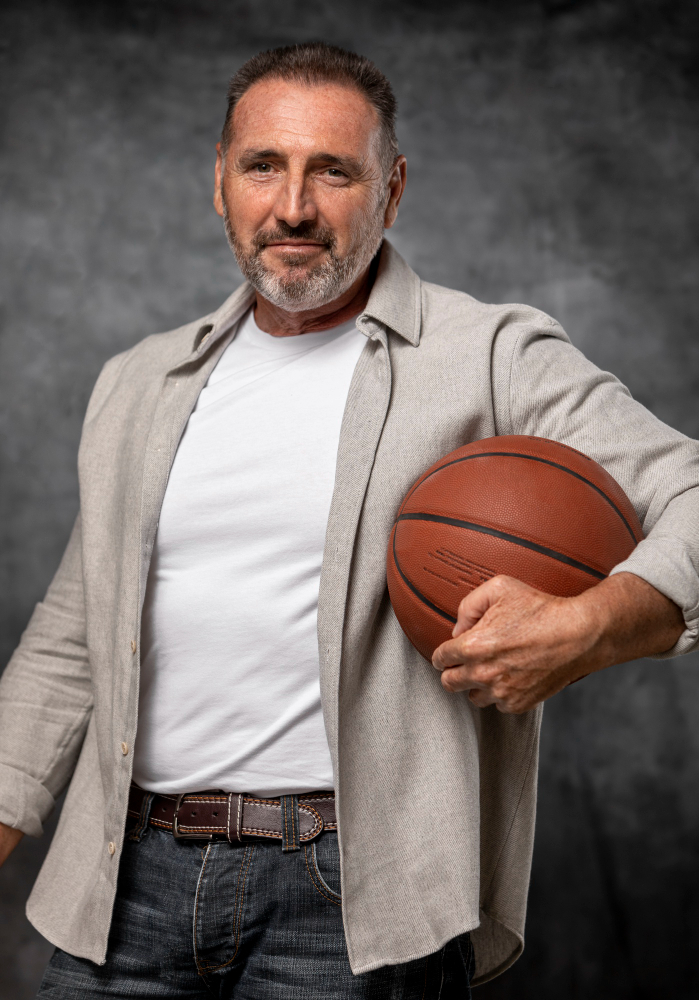
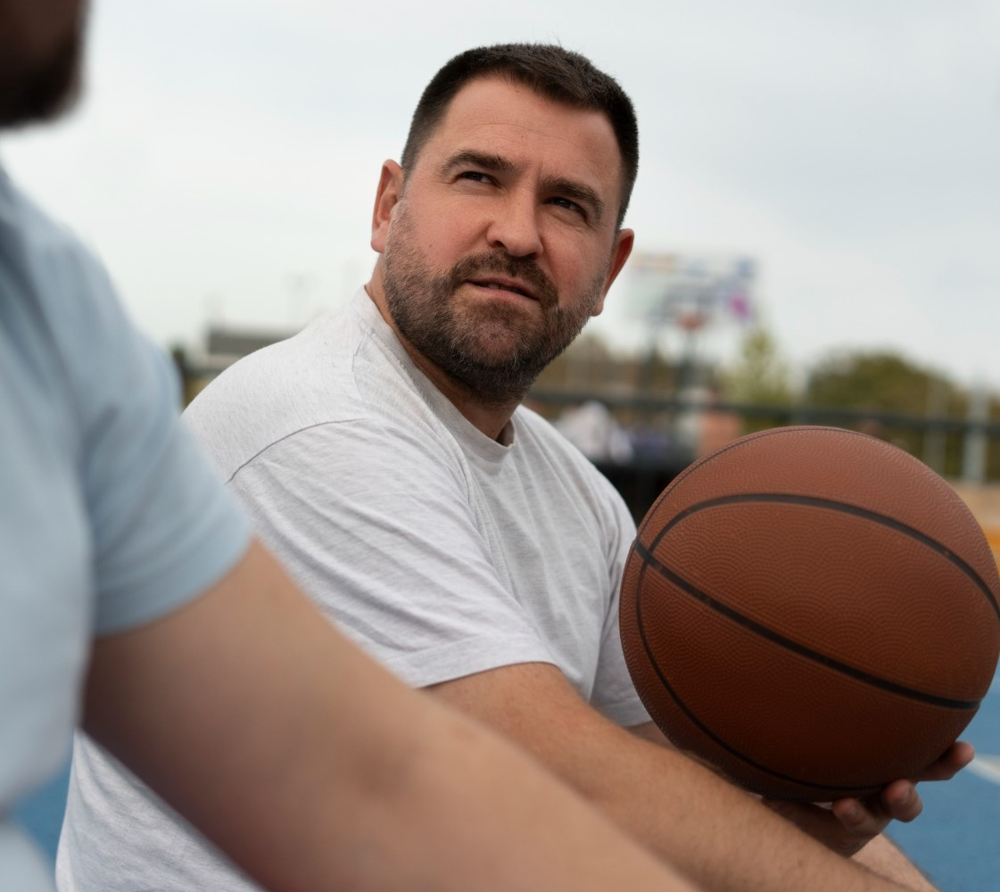
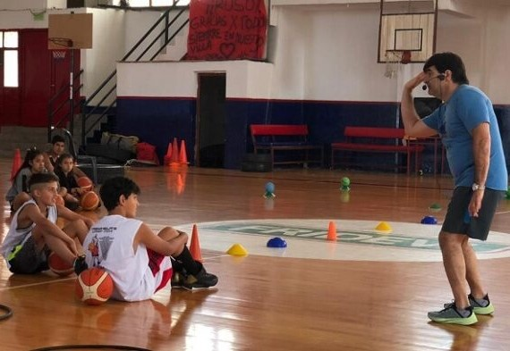
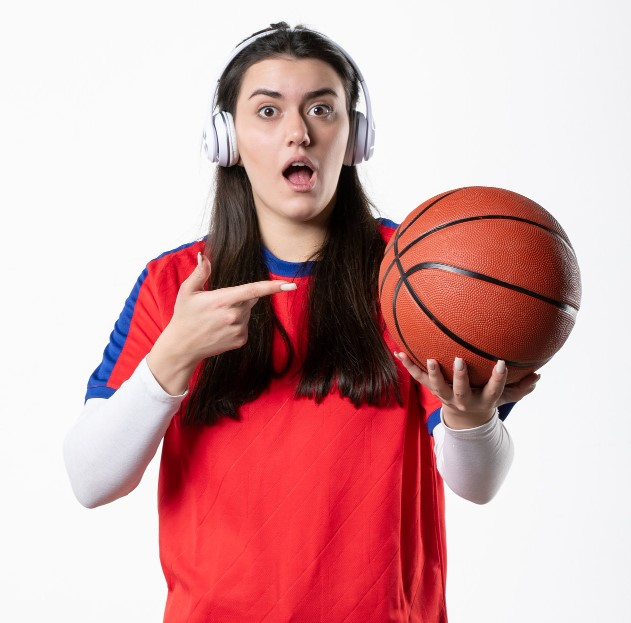

Pedro López es un Jefe Técnico de Básquetbol del Club, con una amplia experiencia profesional. Comenzó su carrera como entrenador de equipos de categorías inferiores, donde ganó varios campeonatos. Posteriormente, ascendió a equipos de categorías superiores, donde logró clasificar a sus equipos para competiciones de torneos en Argentina.
La experiencia laboral de Pedro López le ha permitido adquirir conocimientos y habilidades que le han convertido en uno de los mejores Jefes Técnicos del país. Ha demostrado su capacidad para diseñar modelos de juego exitosos, para motivar a los jugadores y para crear un buen ambiente de trabajo.

Carlos Alvarez es un Técnico de Mayores de Básquetbol con una amplia experiencia y un palmarés deportivo destacado. Comenzó su carrera como jugador profesional, donde ganó varios campeonatos con el Club Deportivo Huracán y la Selección Argentina de Baloncesto. Posteriormente, se retiró como jugador y se convirtió en entrenador.
Como entrenador, Prigioni ha tenido éxito tanto en el ámbito profesional como en el amateur. Con el Club Deportivo Huracán, ganó la Liga Nacional en 2021. Con la Selección Argentina de Baloncesto, ha sido subcampeón de la Copa América en 2022.
La experiencia laboral de Carlos le ha permitido adquirir conocimientos y habilidades que le han convertido en uno de los mejores Técnicos de Mayores de Básquetbol de Argentina. Ha demostrado su capacidad para diseñar modelos de juego exitosos, para motivar a los jugadores y para crear un buen ambiente de trabajo.

Juan Pablo Fernández es un Técnico de Inferiores de Básquetbol con una sólida experiencia en el ámbito amateur. Comenzó su carrera en el Club Deportivo Atenas de Cordoba, donde ha dirigido las categorías U15, U17 y U19.
Como entrenador de inferiores, Fernández ha tenido éxito en el desarrollo de jugadores jóvenes. Con la categoría U15, ganó la Liga Metropolitana en 2017. Con la categoría U17, también ganó la Liga Metropolitana en 2019.
La experiencia laboral de Juan Pablo Fernández le ha permitido adquirir conocimientos y habilidades que le han convertido en uno de los mejores Técnicos de Inferiores de Básquetbol de Argentina. Ha demostrado su capacidad para enseñar los fundamentos técnicos y tácticos del juego, así como para motivar a los jugadores jóvenes y crear un buen ambiente de trabajo.
Este es solo un ejemplo de la experiencia laboral que tiene Pablo como Técnico de Inferiores. Su experiencia y el éxito deportivo de son factores clave para su desarrollo profesional.
Se destaca la experiencia de Fernández en el desarrollo de jugadores jóvenes, que demuestra su capacidad para trabajar con jugadores en diferentes etapas de su desarrollo.

Nuestra Directora de Básquet Femenino argentino es Karina Rodríguez.
Rodríguez es una ex jugadora de básquetbol profesional que se destacó en Brasil y España. Jugó en la selección argentina en dos torneos oficiales, los Juegos Panamericanos de 1991 y 1995.
Como Directora del Club, Rodríguez es responsable de la planificación, organización y desarrollo del básquetbol femenino. Su objetivo es promover el crecimiento del deporte femenino, tanto en el ámbito competitivo como en el formativo.
Rodríguez es una figura importante en el desarrollo del básquetbol femenino argentino. Su trabajo ha contribuido al crecimiento del deporte en el país y al fortalecimiento de la selección nacional.